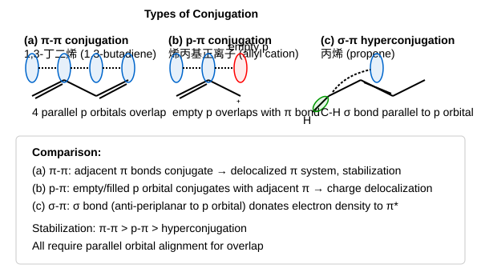

sp杂化：碳碳三键由 1个σ键 + 2个π键组成，两个sp杂化碳原子呈直线形（键角180°）。
| 杂化 | 键长(C-C) | 键能 | s成分 | 电负性 |
|---|---|---|---|---|
| sp (C≡C) | 0.120 nm | 837 kJ/mol | 50% | 最大 |
| sp2 (C=C) | 0.134 nm | 611 kJ/mol | 33% | 中等 |
| sp3 (C-C) | 0.154 nm | 347 kJ/mol | 25% | 最小 |
| 化合物 | 杂化 | pKa |
|---|---|---|
| RC≡CH（端炔） | sp | ≈ 25 |
| R2C=CH2（烯烃） | sp2 | ≈ 44 |
| R3CH（烷烃） | sp3 | ≈ 50 |
| H2O | — | 15.7 |
| NH3 | — | 38 |
RC≡C−Na+ + R'CH2X → RC≡C-CH2R'（SN2反应）
例：HC≡CH ⟶NaNH₂; HC≡C−Na+ ⟶CH₃CH₂Br; HC≡C-CH2CH3（1-丁炔）
• 1 mol Br2 → 反式二溴烯烃（反式加成）
• 过量 Br2 → 四溴烷烃（完全加成）
RC≡CR' + Br2 → 反式-RCBr=CR'Br ⟶Br₂; RCBr2-CR'Br2
• 1 mol HX → 卤代烯烃（马氏，X加在含H较少的C上）
• 过量 HX → 偕二卤代烷（两个X在同一碳上）
条件：HgSO4 / H2SO4 / H2O
端炔 + R2BH → 烯基硼烷 ⟶H₂O₂/NaOH; 醛（反马氏，OH加到端碳）
炔烃经硼氢化后，用CH3COOH（而非H2O2/NaOH）处理烯基硼烷，可得到顺式烯烃。
RC≡CR' ⟶R₂BH; 烯基硼烷 ⟶CH₃COOH; (Z)-RCH=CHR'（顺式烯烃）
炔烃 + HBr + 过氧化物（ROOR） → 反马氏产物（自由基加成机理）
RC≡CH + HBr ⟶ROOR; RCH=CHBr（Br加在端碳上，反马氏）
炔烃能发生亲核加成，而烯烃不能。原因：三键的π电子云密度大，且sp碳电负性大，有利于亲核试剂进攻。反应需碱催化或高温高压条件。
| 反应物 | 条件 | 产物 | 应用 |
|---|---|---|---|
| HC≡CH + CH3OH | KOH催化，160-165°C | CH2=CH-OCH3（甲基乙烯基醚） | 有机合成中间体 |
| HC≡CH + CH3COOH | 催化剂 | CH2=CH-OOCCH3（醋酸乙烯酯） | 乳胶漆、粘合剂原料 |
| HC≡CH + HCN | 催化剂 | CH2=CH-CN（丙烯腈） | 合成腈纶纤维 |
虽然炔烃有更多的π电子，但其亲电加成反应速率反而比烯烃慢，原因有二：
| 还原条件 | 产物 | 立体化学 | 机理 |
|---|---|---|---|
| H2 / Lindlar催化剂 | Z-烯烃（顺式） | 顺式加氢 | 催化表面同侧加H |
| Na / 液NH3 | E-烯烃（反式） | 反式还原 | 自由基阴离子中间体 |
| H2(过量) / Pt或Pd | 烷烃 | 完全加氢 | 两步加氢 |
| 试剂 | 反应 | 现象 |
|---|---|---|
| Ag(NH3)2+（银氨溶液） | RC≡CH → RC≡CAg↓ | 白色沉淀（炔化银） |
| Cu(NH3)2+（铜氨溶液） | RC≡CH → RC≡CCu↓ | 红棕色沉淀（炔化亚铜） |
• 端炔 + KMnO4(酸性/热) → RCOOH + CO2
• 内炔 + KMnO4(酸性/热) → 两个羧酸
例：CH3C≡CCH3 ⟶KMnO₄/H⁺; 2 CH3COOH
例：CH3CH2CH(CH3)CH2CH=CHCH3(含双键) ⟶KMnO₄/H⁺; 相应羧酸
| 类型 | 结构特征 | 例子 | 稳定性 |
|---|---|---|---|
| 累积二烯 | C=C=C（相邻） | 丙二烯 CH2=C=CH2 | 不稳定 |
| 共轭二烯 | C=C-C=C（交替） | 1,3-丁二烯 | 最稳定（离域能） |
| 孤立二烯 | C=C-(CH2)n-C=C | 1,4-戊二烯 | 中等 |
• 1,3-丁二烯的氢化热 = 237 kJ/mol，而两个孤立双键预期 = 2×127 = 254 kJ/mol
• 离域能（共轭能） = 254 - 237 = 17 kJ/mol，说明共轭体系更稳定

| 类型 | 特征 | 典型例子 |
|---|---|---|
| π-π共轭 | 单键两侧各有一个π键，π电子通过p轨道连续重叠而离域 | 1,3-丁二烯 CH2=CH-CH=CH2 |
| p-π共轭 | 单键一侧为π键，另一侧原子提供p轨道（含孤对电子或空轨道）参与共轭 | 烯丙基碳正离子 CH2=CH-CH2+（空p轨道）；氯乙烯中Cl的p轨道与C=C共轭 |
| σ-π超共轭 | C-H的σ键与相邻碳上的π键（或空p轨道）发生部分重叠 | 丙烯中甲基C-H与C=C的超共轭；碳正离子稳定性解释 |
共轭二烯加HX的第一步：H+加到C1，生成烯丙基碳正离子（p轨道与双键共轭，正电荷离域在C2和C4上）
• Br−进攻C2 → 1,2-加成产物
• Br−进攻C4 → 1,4-加成产物
| 二烯 | 亲双烯体 | 产物 |
|---|---|---|
| 1,3-丁二烯 | 顺丁烯二酸酐 | 四氢邻苯二甲酸酐 |
| 1,3-丁二烯 | 丙烯醛 CH2=CHCHO | 环己烯-4-甲醛 |
| 环戊二烯 | 顺丁烯二酸酐 | 降冰片烯二酸酐 |
| 1,3-丁二烯 | DEAD(丁炔二酸二乙酯) | 环己二烯二酸二乙酯 |
在六元环产物中找到双键，从双键两侧"切开"，还原回二烯和亲双烯体。
共轭效应：π电子或孤对电子通过共轭体系发生电子离域化的现象，使分子更稳定。
互变异构：两种异构体通过原子/基团迁移相互转化（如酮-烯醇互变异构）。
1,4-加成：共轭二烯中试剂加到1位和4位，双键移到2,3位。
双烯合成（Diels-Alder）：共轭二烯与亲双烯体发生[4+2]环加成生成六元环。
二烯亲和物：D-A反应中与二烯反应的缺电子化合物（如顺丁烯二酸酐）。
(1) CH3CH2C≡CH ⟶KMnO₄/H⁺; CH3CH2COOH + CO2（端碳氧化为CO₂）
(2) CH3CH2C≡CH ⟶H₂/Pt; CH3CH2CH2CH3（完全加氢→正丁烷）
(3) CH3CH2C≡CH ⟶2Br₂; CH3CH2CBr2CHBr2（四溴代物）
(4) CH3CH2C≡CH + Ag(NH3)2+ → CH3CH2C≡CAg↓（白色沉淀）
(5) CH3CH2C≡CH + Cu(NH3)2+ → CH3CH2C≡CCu↓（红棕色沉淀）
(6) CH3CH2C≡CH ⟶Hg²⁺/H⁺/H₂O; CH3CH2COCH3（马氏水合→2-丁酮）
(1) CH3C≡CH ⟶HgSO₄/H₂SO₄/H₂O; CH3COCH3（Kucherov水合→丙酮）
(2) CH3C≡CH ⟶HBr; CH3CBr=CH2 ⟶Ni/H₂; CH3CHBrCH3
(3) CH3C≡CH ⟶2HBr; CH3CBr2CH3（马氏，两个Br在同一碳）
(4) CH3C≡CH ⟶BH₃; ⟶H₂O₂/NaOH; CH3CH=CH(OH) → CH3CH2CHO ⟶NaBH₄; CH3CH2CH2OH
(5) CH3C≡CH ⟶NaNH₂; CH3C≡CNa ⟶CH₃CH₂Br; CH3C≡CCH2CH3 ⟶H₂/Ni; CH3(CH2)4CH3
(1) 1,3-丁二烯 + 丙烯醛 ⟶D-A; 4-甲醛基环己烯
(2) 1,3-丁二烯 + 顺丁烯二酸酐 ⟶D-A; 四氢邻苯二甲酸酐
(3) CH2=C(Cl)-CH=CH2 ⟶聚合; 氯丁橡胶 [-CH2-C(Cl)=CH-CH2-]n
(4) 2-甲基-1,3-丁二烯 + HBr(1mol) → 1,2-加成 + 1,4-加成 + 3,4-加成多种产物
(5) HC≡C-CH2CH3 ⟶BH₃; ⟶H₂O₂/OH⁻; CH3CH2CH2CHO（反马氏→醛）
(6) (CH3)2CHCH2CH=CHCH3 ⟶KMnO₄/H⁺; CH3CH2CH(CH3)COOH + CH3COOH
(7) 环戊二烯 + Br2 → 3,4-二溴环戊烯(1,2-加成) + 3,5-二溴环戊烯(1,4-加成)
(8) 环己烯 ⟶KMnO₄/H⁺; HOOC(CH2)4COOH（己二酸）
(9) 环戊二烯 + DEAD(丁炔二酸二乙酯) ⟶D-A; 降冰片二烯二酸二乙酯
(1) CH3CH2-CH(OH)-CH3：HC≡CH ⟶NaNH₂; HC≡CNa ⟶CH₃CH₂Br; HC≡CCH₂CH₃ ⟶Hg²⁺/H₂O; CH₃COCH₂CH₃ ⟶H₂/Ni; 产物
(2) CH3CH2CH2CH2Br：HC≡CH ⟶NaNH₂; NaC≡CH ⟶CH₃CH₂Br; CH₃CH₂C≡CH ⟶HBr/ROOR; CH₃CH₂CH=CHBr ⟶H₂/Ni; 产物
(3) HC≡CH ⟶CuCl/NH₄Cl; H₂C=C(H)-C≡CH（乙烯基乙炔）→ 进一步反应
(4) 环氧乙烷：HC≡CH ⟶Br₂(低温); CHBr=CHBr ⟶2KOH; → NaO⁻ → 环氧
(5) CH3CH2CCl2CH3：HC≡CNa + CH₃CH₂Br → 1-丁炔 → HCl(2mol)
(6) 1-己醇路线：HC≡CH + Na → NaC≡CH + 丙基溴 → 戊-1-炔 → Pd/BaSO₄ → OH
(1) 乙烷、乙烯、乙炔：
Step 1：取样加Br2/CCl4 → 乙烷不褪色（饱和），乙烯和乙炔褪色
Step 2：褪色的两个样加Ag(NH3)2+ → 乙炔产生白色沉淀，乙烯无现象
(2) 端炔、共轭二烯、内炔：
Step 1：Cu(NH3)2+ → 端炔产生红棕色沉淀
Step 2：剩余两者加顺丁烯二酸酐 → 共轭二烯发生D-A反应生成沉淀，内炔无反应
(1)(2)均可通过AgNO3/NH3·H2O 或 CuCl/NH3·H2O 溶液除去。
原理：端炔与银氨/铜氨溶液生成不溶沉淀，而乙烷/乙烯不反应。
1,4-加成产物为内烯烃，双键两侧有更多的烷基，σ-π*超共轭效应更强，分子更稳定。
1,2-加成产物为端烯烃，超共轭效应弱，稳定性较低。
分子式 C6H8（12×6+8=80），不饱和度=3（吸收3mol H₂）
臭氧化产物：HCHO + OHC-CHO → 还原回去 → CH2=CH-CH=CH-CH=CH2
结论：己-1,3,5-三烯（三个共轭双键）
• C₆H₁₀ + H₂ → 2-甲基戊烷 → 碳骨架为异己基
• Hg²⁺水合 → 4-甲基-2-戊酮 → 马氏水合，三键在C1-C2
• CuCl红色沉淀 → 端炔
结论：4-甲基戊-1-炔 (CH3)2CHCH2C≡CH
A：戊-1-炔 CH≡C-CH₂CH₂CH₃（AgNO₃白色沉淀→端炔；加氢→正戊烷）
B：戊-2-炔 CH₃C≡CCH₂CH₃（无Ag沉淀→内炔；KMnO₄→醋酸+丙酸）
C：戊-1,3-二烯 CH₂=CH-CH=CHCH₃（与顺丁烯二酸酐D-A反应→白色固体）
D：环戊烯（只吸收1mol H₂→C₅H₁₀环烷烃；臭氧化→一种醛即戊二醛）
低温 → 动力学控制 → 1,2-加成为主 → 3-氯环戊烯
H⁺加到C1后，生成烯丙基碳正离子。碳正离子(2)比(1)更稳定（烯丙型），反应主要按路径(2)进行，Cl⁻进攻C3 → 3-氯环戊烯。
关键：手性碳连接炔基和烯基。
A：含一个内炔和一个(E)-双键的手性分子
Lindlar加氢→(Z)-烯烃(C)，与原有(E)-双键不同→仍有手性→有旋光性
Na/NH₃→(E)-烯烃(D)，与原有(E)-双键相同→形成对称结构→内消旋→无旋光性
B(完全加氢)→烷烃，碳骨架对称→无旋光性
| 比较项目 | 炔烃 (C≡C) | 烯烃 (C=C) |
|---|---|---|
| 杂化方式 | sp | sp² |
| 键长 | 0.120 nm | 0.134 nm |
| 键能 | 837 kJ/mol | 611 kJ/mol |
| C-H酸性 (pKa) | ~25（端炔，弱酸性） | ~44（极弱，几乎无酸性） |
| 亲电加成速率 | 较慢（sp碳电负性大，π电子不易给出） | 较快（sp²碳电负性较小） |
| 亲核加成 | 可以发生（碱催化/高温高压） | 一般不发生 |
| 加成特有反应 | Kucherov水合(→酮)；硼氢化→醛；炔钠增碳；半加氢(Lindlar/Na-NH₃) | 硼氢化→醇；mCPBA环氧化；NBS烯丙位取代 |
| 鉴别反应 | 端炔：Ag(NH₃)₂⁺→白色↓；Cu(NH₃)₂⁺→红棕色↓ | Br₂/CCl₄褪色；KMnO₄稀冷褪色 |
| 氧化断裂产物 | KMnO₄→羧酸(+CO₂对端炔) | KMnO₄浓热→羧酸+酮；O₃→醛+酮 |
| 几何异构 | 无（直线形） | 有（E/Z异构） |
逆D-A分析：在六元环中找到双键（C4=C5位），从双键两侧"切开"：
切开C3-C4键和C5-C6键 → 还原回原料：
二烯：异戊二烯 CH₂=C(CH₃)-CH=CH₂（2-甲基-1,3-丁二烯）
亲双烯体：顺丁烯二酸酐（含两个吸电子羰基）
验证：异戊二烯(4π) + 顺丁烯二酸酐(2π) → [4+2] → 目标产物 ✓
逆D-A分析：
①找到六元环中的双键（C4=C5）
②从双键两侧断裂 → C3-C4和C5-C6断开
③C3带CN，C6带CHO → 这两个基团来自亲双烯体
二烯：1,3-丁二烯 CH₂=CH-CH=CH₂
亲双烯体：丙烯腈-丙烯醛？不对 → 应为2-氰基丙烯醛 CH₂=C(CN)CHO（一个双键碳连CN，另一个连CHO）
验证：1,3-丁二烯 + CH₂=C(CN)CHO → [4+2] → 3-氰基环己-4-烯甲醛 ✓
分析：
①环戊二烯被"锁"在s-cis构象 → D-A反应活性极高
②丙烯酸甲酯含吸电子基(-COOCH₃) → 良好的亲双烯体
③产物：降冰片-5-烯-2-甲酸甲酯（双环[2.2.1]庚-5-烯-2-甲酸甲酯）
④endo规则：-COOCH₃朝向双键桥的方向 → endo产物为主产物（动力学控制）
⑤endo选择性原因：过渡态中亲双烯体取代基与二烯π体系存在二级轨道相互作用（次级轨道效应），降低活化能
(a) (2E,4E)-己二烯：s-trans为优势构象，但可以旋转到s-cis → 能反应（但速率较慢）
(b) (2E,4Z)-己二烯：s-cis构象中C1-H与C4-CH₃产生严重位阻 → 反应困难
(c) 环戊二烯：被锁在s-cis构象 → 反应极快
(d) 2,3-二叔丁基-1,3-丁二烯：两个巨大的叔丁基使s-cis构象能量极高（位阻太大）→ 不能反应
结论：能否采取s-cis构象是D-A反应能否进行的关键！